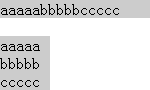

BX1039: IE8 标准模式及 Opera 不支持 WBR 元素
作者：陆远
标准参考
无。
问题描述
IE8 标准模式及 Opera 不支持 WBR 元素，在 HTML 中使用 WBR 元素在这两个浏览器中将不会产生任何效果。
造成的影响
若在页面中使用了 WBR 元素试图加入软换行符，同时确实利用了这个元素的换行特征时，在 IE8(S) 及 Opera 中可能会发生布局异常。
受影响的浏览器
| IE8(S) Opera | 不支持 WBR 元素 |
|---|
问题分析
WBR 元素不是现行 W3C HTML 4.01 规范中的元素。
他最初是由 IE 支持的非标准元素，IE6, IE7 支持 WBR 元素，但是在 IE8 的标准模式中，却不再支持这个元素。
WBR（Word BReak）元素会插入一个软换行符，软换行符的意思是，当有必要的时候允许在这里换行，在可以不换行的时候这个换行符不是必须的。
- WBR 元素不会被渲染。
- WBR 元素不需要闭合。
关于 WBR 元素 的更多信息，请参考 MSDN 规范 WBR Element | wbr Object 中的内容。
在最新的 HTML 5 草案规范中，已经加入 WBR 元素，其作用与 IE 内作用相同。相关内容可以参考 HTML 5 4.6.25 The wbr element
下面通过代码进行验证:
<!DOCTYPE html>
<div style="width:auto; background:#CCC;">
aaaaa<wbr />bbbbb<wbr />ccccc
</div>
<br />
<div style="width:50px; background:#CCC;">
aaaaa<wbr />bbbbb<wbr />ccccc
</div>
上面代码有两个 DIV 容器，一个宽度为 auto，另一个宽度为 50px，两个 DIV 内部均包含一些连续的英文字符，但是通过 WBR 元素被隔开。
这段代码在各浏览器中运行效果如下：
| IE8(S) Opera | IE6 IE7 IE8(Q) Firefox Chrome Safari |
|---|---|
 |
 |
- 在 IE8(S) Opera 中，浏览器没有理会 WBR 元素，即使第二个 DIV 宽度不够也没有发生换行，可以认为浏览器不支持这个元素；
- 在 其他浏览器 中，当容器宽度不足以不换行显示连续的英文字符时，WBR 元素发挥它的作用，英文字符发生换行。
解决方案
1. 可以为WBR元素添加一个 :after 伪元素，强迫其后插入一个软换行符。
如：
WBR:after { content:"\00200B"; }
但这个方法仅能用于 Opera，IE8 对于WBR的 :after 伪元素不识别。
2. 将 WBR 元素全部用“​”替换。达到相同的效果。
更多关于 WBR 元素的资料参见：http://www.quirksmode.org/oddsandends/wbr.html
参见
知识库
相关问题
测试环境
| 操作系统版本: | Windows 7 Ultimate build 7600 |
|---|---|
| 浏览器版本: |
IE6 IE7 IE8 Firefox 3.6.3 Chrome 6.0.427.0 dev Safari 4.0.5 Opera 10.53 |
| 测试页面: | wbr.html |
| 本文更新时间: | 2010-07-08 |
关键字
word break WBR 换行 软换行